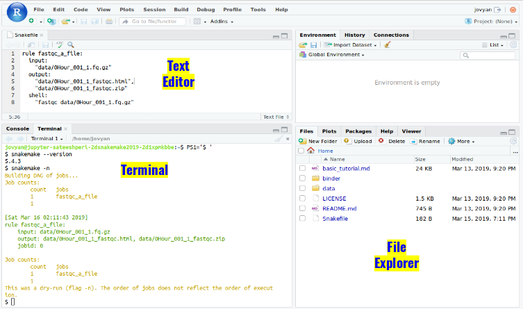

13. Snakemake Basic Tutorial¶
 Binder
Binder- We’re mostly going to work in the file editor and the terminal of Rstudio; to get started, open the terminal, and execute following to to get a shorter terminal prompt.
PS1='$ '

14. Background¶
The genome of a living organism encodes its hereditary information. It serves as a blueprint for proteins, which form living cells, carry information and drive chemical reactions. DNA sequencing, producing gigabytes of data from a single biological sample (e.g. a biopsy of some tissue). For technical reasons, DNA sequencing cuts the DNA of a sample into millions of small pieces, called reads. In order to recover the genome of the sample, one has to map these reads against a known reference genome (e.g., the human one obtained during the famous human genome project). This task is called read mapping.
15. Getting started - your first Snakefile¶
- Create a new text file (
File,New File,Text file) and write:
rule fastqc_a_file:
shell:
"fastqc data/0Hour_001_1.fq.gz"
(I suggest copy/pasting this into RStudio.)
- Then save it as a file named
Snakefile. - Now, run snakemake:
snakemake
- and you should see:
Building DAG of jobs...
Using shell: /bin/bash
Provided cores: 1
Rules claiming more threads will be scaled down.
...
Approx 95% complete for 0Hour_001_1.fq.gz
Analysis complete for 0Hour_001_1.fq.gz
[Wed Feb 27 13:09:51 2019]
Finished job 0.
1 of 1 steps (100%) done
Complete log: /home/jovyan/.snakemake/log/2019-02-27T130941.260352.snakemake.log
Upon execution there will be two new files, ‘0Hour_001_1_fastqc.html’ & ‘0Hour_001_1_fastqc.zip’
Note: snakemake configuration file is by default calledSnakefile
15.1. Updating the Snakefile to track inputs and outputs¶
At the moment this is basically just a shell script with extra syntax… what’s the point?
Well, shell scripts - and this snakefile, too - will rerun the command every time you run the file, even if there’s no reason to do so because the file hasn’t changed.
Digression: This is particularly important for large or long workflows, where you’re dealing with 10s to 100s of files that may take hours to days to process! It can be hard to figure out which files to rerun, but (spoiler alert) snakemake can really help you do this!
It’s hard to track this kind of thing in a shell script - I usually just comment out the lines I don’t want run, or break my commands up into multiple shell scripts so they don’t take so long - but with snakemake, you can annotate the rule with input and output files!
- Change your snakefile to look like this:
rule fastqc_a_file:
input:
"data/0Hour_001_1.fq.gz"
output:
"data/0Hour_001_1_fastqc.html",
"data/0Hour_001_1_fastqc.zip"
shell:
"fastqc data/0Hour_001_1.fq.gz"
here, we’ve annotated the rule with the required input file, as well as the expected output files.
Question: how do we know what the output files are?
- Now run:
snakemake
and you should see:
Building DAG of jobs...
Nothing to be done.
Complete log: /home/jovyan/.snakemake/log/2019-02-27T132031.813143.snakemake.log
What happened??
snakemake looked at the file, saw that the output files existed, and figured out that it didn’t need to do anything!
15.2. Forcibly re-running things¶
- You can tell snakemake to run the rule no matter what with
-f:
snakemake -f
- You can also remove an output file and it will automatically re-run:
rm data/*.html
snakemake
Note that you don’t need to remove all the output files to rerun a command - just remove one of them.
- You can also update the timestamp on an input file, and snakemake will figure out that the output file is older than the input file, and rerun things.
touch data/*.fq.gz
snakemake
This will become important later :)
16. Multiple rules¶
- Let’s add a rule to run fastqc on a second file:
rule fastqc_a_file:
input:
"data/0Hour_001_1.fq.gz"
output:
"data/0Hour_001_1_fastqc.html",
"data/0Hour_001_1_fastqc.zip"
shell:
"fastqc data/0Hour_001_1.fq.gz"
rule fastqc_a_file2:
input:
"data/6Hour_001_1.fq.gz"
output:
"data/6Hour_001_1_fastqc.html",
"data/6Hour_001_1_fastqc.zip"
shell:
"fastqc data/6Hour_001_1.fq.gz"
Now, if you run this, the Right Thing won’t happen: snakemake will do nothing. Why?
- Well, snakemake only runs the first rule in a Snakefile, by default. You can give a rule name on the command line, if you like, or you can tell snakemake what output file(s) you want. Let’s do the latter:
snakemake data/0Hour_001_1_fastqc.html data/6Hour_001_1_fastqc.html
and now you should see the second fastqc command run, with the appropriate output files!
Note that snakemake only runs the second rule, because it looks at the output files and sees that the first file you wanted,0Hour_001_1_fastqc.htmlalready exists!
Points to note:
- this is pretty long compared to the same shell script…
- specifying which file or rule you want is kind of annoying…
17. A first refactoring: adding a better default rule¶
Let’s start refactoring (cleaning up) this Snakefile.
- First, let’s add a rule at the top:
rule all:
input:
"data/0Hour_001_1_fastqc.html",
"data/6Hour_001_1_fastqc.html"
rule fastqc_a_file:
input:
"data/0Hour_001_1.fq.gz"
output:
"data/0Hour_001_1_fastqc.html",
"data/0Hour_001_1_fastqc.zip"
shell:
"fastqc data/0Hour_001_1.fq.gz"
rule fastqc_a_file2:
input:
"data/6Hour_001_1.fq.gz"
output:
"data/6Hour_001_1_fastqc.html",
"data/6Hour_001_1_fastqc.zip"
shell:
"fastqc data/6Hour_001_1.fq.gz"
this rule, by convention called all, is a default rule that produces all the output files. But it’s a bit weird! It’s all input, and no output!
This is a blank rule that gathers together all of the various files you want produced, and says “hey, snakemake, I depend on all of these files for my input - make them for me!” And then, once those files are all there, it …does nothing.
Yep, this is perfectly legal in snakemake, and it’s one way to make your life easier.
Note that snakemake -f no longer works properly, because -f only forces rerunning a single rule. To rerun everything, you can run touch data/*.fq.gz to make all the output files stale; or rm data/*.html to remove some of the output files.
18. A second refactoring: doing a bit of templating¶
There’s a lot of repetition in each of these rules. Let’s collapse it down a little bit by replacing the filename in the fastqc command with a magic variable, {input}.
rule all:
input:
"data/0Hour_001_1_fastqc.html",
"data/6Hour_001_1_fastqc.html"
rule fastqc_a_file:
input:
"data/0Hour_001_1.fq.gz"
output:
"data/0Hour_001_1_fastqc.html",
"data/0Hour_001_1_fastqc.zip"
shell:
"fastqc {input}"
rule fastqc_a_file2:
input:
"data/6Hour_001_1.fq.gz"
output:
"data/6Hour_001_1_fastqc.html",
"data/6Hour_001_1_fastqc.zip"
shell:
"fastqc {input}"
This all works as before, but now the rule is a bit more generic and will work with any input file. Sort of.
19. Refactoring 3: templating output files, too¶
What do I mean, sort of?
Well, the output filenames ALSO depend on the input file names in some way - specifically, fastqc replace part of the filename with _fastqc.html and _fastqc.zip to make its two output files.
Let’s rewrite the rule using some snakemake pattern matching:
rule all:
input:
"data/0Hour_001_1_fastqc.html",
"data/6Hour_001_1_fastqc.html"
rule fastqc_a_file:
input:
"{filename}.fq.gz"
output:
"{filename}_fastqc.html",
"{filename}_fastqc.zip"
shell:
"fastqc {input}"
rule fastqc_a_file2:
input:
"{filename}.fq.gz"
output:
"{filename}_fastqc.html",
"{filename}_fastqc.zip"
shell:
"fastqc {input}"
What we’ve done here is tell snakemake that anytime we say we want a file that ends with _fastqc.html, it should look for a file that ends in .fq.gz and then run fastqc on it.
Try running this:
snakemake
Oh no! We get a AmbiguousRuleException:! What’s going on?
Well, if you look at the rule above, we’ve given snakemake two different rules to produce the same file(s)! fastqc_a_file and fastqc_a_file2 are now identical rules! snakemake doesn’t like that.
Let’s remove one, to get a trimmer, leaner, and above all functional snakefile:
rule all:
input:
"data/0Hour_001_1_fastqc.html",
"data/6Hour_001_1_fastqc.html"
rule fastqc_a_file:
input:
"{filename}.fq.gz"
output:
"{filename}_fastqc.html",
"{filename}_fastqc.zip"
shell:
"fastqc {input}"
and THAT should now work just fine!
19.1. Adding some more files¶
Now here’s the fun bit – if you look in the data directory, you’ll see that there are actually 8 files in there. Let’s modify the snakefile to run fastqc on all of them!
How should we do that? (Give it a try!)
rule all:
input:
"data/0Hour_001_1_fastqc.html",
"data/6Hour_001_1_fastqc.html",
"data/6Hour_001_2_fastqc.html"
rule fastqc_a_file:
input:
"{arglebarf}.fq.gz"
output:
"{arglebarf}_fastqc.html",
"{arglebarf}_fastqc.zip"
shell:
"fastqc {input}"
19.2. Rerunning snakemake¶
Note you can just run snakemake whenever you want. It won’t do anything unless something’s changed.
snakemake
20. Building out the workflow¶
So, we’ve gotten fastqc sorted out. What’s next?
Let’s add in a new rule - multiqc, to summarize our fastqc results.
multiqc takes a directory name under which there are one or more fastqc reports, and then summarizes them.
Running it on the command line,
multiqc data
you can see that it creates two outputs, multiqc_report.html and the directory multiqc_data/ which contains a bunch of files. Let’s create a snakemake rule for this; add:
rule run_multiqc:
output:
"multiqc_report.html",
directory("multiqc_data")
shell:
"multiqc data/"
to the bottom of the file. (Note, you need to tell snakemake if an output is a directory.)
Now run it:
snakemake run_multiqc
This …doesn’t really do what we want, for a few reasons.
First of all, you have to specify the rule name or else snakemake doesn’t run anything. How do we fix this??
Second of all, multiqc_report.html already exists, so snakemake doesn’t run the rule. How do we actually test the rule??
Third of all, the multiqc rule has no input dependencies. How do we specify them??
Let’s fix the first two things first:
- add
multiqc_report.htmlto the inputs for the first all. - then remove
multiqc_report.htmland re-run snakemake.
Your snakefile should look like:
rule all:
input:
"data/0Hour_001_1_fastqc.html",
"data/6Hour_001_1_fastqc.html",
"multiqc_report.html"
rule fastqc_a_file:
input:
"{filename}.fq.gz"
output:
"{filename}_fastqc.html",
"{filename}_fastqc.zip"
shell:
"fastqc {input}"
rule run_multiqc:
output:
"multiqc_report.html",
directory("multiqc_data")
shell:
"multiqc data/"
Yay, that seems to work!
**Points to note:
- other than the first rule, rules can be in any order
- the rule name doesn’t really matter, it’s mostly for debugging. It just needs to be “boring” (text, underscores, etc. only)**
20.1. Providing input files explicitly to the multiqc rule¶
The third problem, that multiqc doesn’t have any input dependencies, is a bit harder to fix.
(Why do we want to fix this? Well, this is how snakemake tracks “out of date” files - if we don’t specify input dependencies, then we may update one of the fastqc results that multiqc uses, but snakemake won’t re-run multiqc on it, and our multiqc results will be out of date.)
Basically we need to tell snakemake all of the files that we want. On the face of it, that’s easy – change the rule like so:
rule run_multiqc:
input:
"data/0Hour_001_1_fastqc.html",
"data/6Hour_001_1_fastqc.html",
output:
"multiqc_report.html",
directory("multiqc_data")
shell:
"multiqc data/"
This will work, but there are two reasons this is not great.
First, we’re repeating ourselves. Those input files are in the all rule above, and also in this rule. If you are as forgetful as I am, this means that you run the risk of updating one rule and not the other, and getting out of sync.
Second, we’re explicitly listing out the files that we want produced. That’s not super great because it makes it annoying to add files.
We can fix the first issue by using “variables”. The second issue requires a bit more advanced programming, and we’ll leave it to the very end.
To use variables, let’s make a Python list at the very top, containing all of our expected output files from fastqc:
fastqc_output = ["data/0Hour_001_1_fastqc.html", "data/6Hour_001_1_fastqc.html",
"data/0Hour_001_2_fastqc.html", "data/6Hour_001_2_fastqc.html",
"data/0Hour_002_1_fastqc.html", "data/6Hour_002_1_fastqc.html",
"data/0Hour_002_2_fastqc.html", "data/6Hour_002_2_fastqc.html"]
and modify the all and multiqc rules to contain this list. The final snakefile looks like this:
fastqc_output = ["data/0Hour_001_1_fastqc.html", "data/6Hour_001_1_fastqc.html",
"data/0Hour_001_2_fastqc.html", "data/6Hour_001_2_fastqc.html",
"data/0Hour_002_1_fastqc.html", "data/6Hour_002_1_fastqc.html",
"data/0Hour_002_2_fastqc.html", "data/6Hour_002_2_fastqc.html"]
rule all:
input:
fastqc_output,
"multiqc_report.html"
rule fastqc_a_file:
input:
"{filename}.fq.gz"
output:
"{filename}_fastqc.html",
"{filename}_fastqc.zip"
shell:
"fastqc {input}"
rule run_multiqc:
input:
fastqc_output
output:
"multiqc_report.html",
directory("multiqc_data")
shell:
"multiqc data/"
**Points to note:
- quoted strings are …strings (filename, usually)
- you can also use Python to create, manipulate, etc. filenames or lists of them, and it will work fine!
- this includes loading in filenames from spreadsheets, etc. - more on that later.**
20.2. Refactoring this to make it slightly more concise –¶
We’ve got one more redundancy in this file - the fastqc_output is listed in the all rule, but you don’t need it there! Why?
Well, multiqc_report.html is already in the all rule, and the multiqc rule depends on fastqc_output, so fastqc_output already needs to be created to satisfy the all rule, so… specifying it in the all rule is redundant! And you can remove it!
(It’s not a big deal and I usually leave it in. But I wanted to talk about dependencies!)
The Snakefile now looks like this:
fastqc_output = ["data/0Hour_001_1_fastqc.html", "data/6Hour_001_1_fastqc.html",
"data/0Hour_001_2_fastqc.html", "data/6Hour_001_2_fastqc.html",
"data/0Hour_002_1_fastqc.html", "data/6Hour_002_1_fastqc.html",
"data/0Hour_002_2_fastqc.html", "data/6Hour_002_2_fastqc.html"]
rule all:
input:
"multiqc_report.html"
rule fastqc_a_file:
input:
"{filename}.fq.gz"
output:
"{filename}_fastqc.html",
"{filename}_fastqc.zip"
shell:
"fastqc {input}"
rule run_multiqc:
input:
fastqc_output
output:
"multiqc_report.html",
directory("multiqc_data")
shell:
"multiqc data/"
and we can rerun it from scratch by doing:
rm data/*.html multiqc_report.html
snakemake
20.3. Digression: what files does snakemake check in order to decide about rerunning?¶
snakemake will compare only at the very initial input files, and the specific output file(s) you are requesting, to decide if it needs to rerun the workflow.
In practical terms, this means that if you just delete the data/*.html files above but leave multiqc_report.html around, snakemake won’t rerun anything. You have to delete both the intermediaries and the end output files (as we do in the previous section), or update the raw input files, in order to force rerunning.
(This is a feature, not a bug - it helps deal with data-intensive pipelines where the intermediate files are really big.)
20.4. Making a clean rule¶
It’s kind of annoying to have to delete things explicitly. Snakemake should take care of that for us. Let’s add a new rule, clean, that forces rerunning of things –
rule clean:
shell:
"rm -f {fastqc_output} multiqc_report.html"
"rmdir -fr multiqc_data/"
and now try re-running things:
snakemake -p clean
snakemake
**A few things to point out:
- Here we see the use of variables inside a shell command, again -
{fastqc_output}means “replace the thing in the curly quotes with the Python values infastqc_output. - We’re using
snakemake -pto get a printout of the commands that are run.**
What’s particularly nice about the clean rule (the name is a convention, not a requirement) is that you only need to keep track of the expected output files in one or two places - the all rule, and the clean rule.
20.5. Digression: running things in parallel¶
So, we’ve put all this work into making this snakefile with its input rules and its output rules… and there are a lot of advantages to our current approach already! Let’s list a few of them –
- we’ve completely automated our analysis!
- we can easily add new data files into fastqc and multiqc!
- we can rerun things easily, and (even better) by default only things that need to be run will be run.
- the snakefile is actually pretty reusable - we could drop this into a new project, and, with little effort, run all of these things on new data!
but there’s even more practical value in this, too – because we’ve given snakemake a recipe, rather than a script, we can now run these commands in parallel, too!
Try:
snakemake clean
snakemake -j 4
this will run up to four things in parallel!
20.6. Doing more things in our workflow.¶
Let’s add some trimming!
rule trim_reads:
input:
"{filename}_1.fq.gz",
"{filename}_2.fq.gz"
output:
"{filename}_1.pe.qc.fq.gz",
"{filename}_1.se.qc.fq.gz",
"{filename}_2.pe.qc.fq.gz",
"{filename}_2.se.qc.fq.gz"
shell:
"trimmomatic PE {input} {output} LEADING:2 TRAILING:2 \
SLIDINGWINDOW:4:15 \
MINLEN:25"
Points to make:
- I’m being really careful about input and output filenames to make sure that the wildcards work properly, and that we can fastqc things properly!
- the order of files in
{input}and{output}matter - they’re passed in that order to snakemake! (See the output ofsnakemake -p.)
Now add the appropriate files into the fastc output list too – change it to:
fastqc_output = ["data/0Hour_001_1_fastqc.html", "data/6Hour_001_1_fastqc.html",
"data/0Hour_001_2_fastqc.html", "data/6Hour_001_2_fastqc.html",
"data/0Hour_002_1_fastqc.html", "data/6Hour_002_1_fastqc.html",
"data/0Hour_002_2_fastqc.html", "data/6Hour_002_2_fastqc.html",
"data/0Hour_001_1.pe.qc_fastqc.html", "data/0Hour_002_1.pe.qc_fastqc.html",
"data/6Hour_001_1.pe.qc_fastqc.html", "data/6Hour_002_1.pe.qc_fastqc.html",
"data/0Hour_001_2.pe.qc_fastqc.html", "data/0Hour_002_2.pe.qc_fastqc.html",
"data/0Hour_001_2.pe.qc_fastqc.html", "data/0Hour_002_2.pe.qc_fastqc.html"]
and re-run everything:
snakemake clean
snakemake -j 4
and voila - you’ve got a pile of trimmed output files, and a nice multiqc report on pre- and post- quality!
One other point to make: by naming the files “right”, i.e. by making the trimmed files meet the input requirements for the fastqc rule, we could automatically take advantage of that rule to run fastqc on them. A lot of snakemake seems to boil down to file naming, for better or for worse… :)
21. More advanced snakemake¶
21.1. Dry run¶
You can use snakemake -n to see what would be run, without actually running it! This is called a “dry run”. This is useful when you have really big compute.
snakemake clean
snakemake -n
21.2. Running things in parallel, revisited¶
Above, we saw that you can use snakemake -j 4 to run four jobs in parallel. Here are some other
- all the output is sort of smushed together… if a rule fails, it may be hard to figure out what happened. You can always just rerun snakemake.
- still need to be careful about how much memory and processor you’re using!
- can be used on a cluster, to distribute jobs across multiple compute nodes. (This requires more work; also see, Specifying required software.)
21.3. Specifying software required for a rule¶
You can specify software on a per-rule basis! This is really helpful when you have incompatible software requirements for different rules, or want to run on a cluster, or just want to pin your snakemake workflow to a specific version.
For example, if you create a file env_fastqc.yml with the following content,
channels:
- bioconda
- defaults
- conda-forge
dependencies:
- fastqc==0.11.8
and then change the fastqc rule to look like this:
rule fastqc_a_file:
input:
"{filename}.fq.gz"
output:
"{filename}_fastqc.html",
"{filename}_fastqc.zip"
conda:
"env_fastqc.yml"
shell:
"fastqc {input}"
you can now run snakemake like so,
snakemake --use-conda
and for that rule, snakemake will install just that software, with the specified version.
This aids in reproducibility, in addition to the practical advantages of isolating software installs from each other.
21.4. Outputting the entire workflow diagram¶
You can visualize your workflow like so!
snakemake --dag | dot -Tpng > dag.png
- The DAG png file should look something like this,

21.5. Snakemake Report¶
Snakemake can automatically generate detailed self-contained HTML reports that encompass runtime statistics, provenance information, workflow topology and results.
- To create the report simply run
snakemake --report report.html
- Sample report here
21.6. Adding in some Python…¶
- You can add in some Python to load in the input files, like so:
import glob, sys
fastqc_input = glob.glob('data/?Hour_00?_?.fq.gz')
fastqc_output = []
for filename in fastqc_input:
new_filename = filename.split('.')[0] + '_fastqc.html'
fastqc_output.append(new_filename)
for filename in fastqc_input:
new_filename = filename.split('.')[0] + '.pe.qc_fastqc.html'
fastqc_output.append(new_filename)
print('from these input files', fastqc_input, file=sys.stderr)
print('I constructed these output filenames', fastqc_output, file=sys.stderr)
rule all:
input:
"multiqc_report.html"
rule clean:
shell:
"rm -f {fastqc_output} multiqc_report.html"
rule fastqc_a_file:
input:
"{arglebarf}.fq.gz"
output:
"{arglebarf}_fastqc.html",
"{arglebarf}_fastqc.zip"
conda:
"env_fastqc.yml"
shell:
"fastqc {input}"
rule run_multiqc:
input:
fastqc_output
output:
"multiqc_report.html",
directory("multiqc_data")
shell:
"multiqc data/"
rule trim_reads:
input:
"{filename}_1.fq.gz",
"{filename}_2.fq.gz"
output:
"{filename}_1.pe.qc.fq.gz",
"{filename}_1.se.qc.fq.gz",
"{filename}_2.pe.qc.fq.gz",
"{filename}_2.se.qc.fq.gz"
shell:
"trimmomatic PE {input} {output} LEADING:2 TRAILING:2 \
SLIDINGWINDOW:4:15 \
MINLEN:25"
Take a look at glob_wildcards as well.
22. Final thoughts - writing your own snakefile¶
Just like scripting, or writing an R script, writing a snakefile is a kind of programming. So you’ll have to do a lot of debugging :) :(.
- A few thoughts for you on how to do this:
- start small, grow your snakefile!
- DO copy and paste from this tutorial and others you find online!
- it rarely hurts to just re-run snakemake!
22.1. Dealing with complexity¶
- Workflows can get really complicated; here, for example, is one for our most recent paper. But it’s all just using the building blocks that I showed you above!
- If you want to see some good examples of how to build nice, clean, simple looking workflows, check out this RNAseq example.
23. Thinking about workflows - a strong(er) argument¶
what do (snakemake) workflows do for me?
- declarative vs procedural specification
- allows analysis of workflow graph, parallelization
- allows declaration of specific software needed, for later tracking
- can compare workflows more easily, in theory (=> reproducibility)
- can rerun failed steps
- tracks dependencies on files
- allows rerunning just the bits that need to rerun
- reusability, in theory
- different conda environments for each step
- allows pinning of software versions
- allows use of potentially incompatible software
The main reason to use snakemake is that it lets be sure that my workflow completed properly. snakemake tracks which commands fails, and will stop the workflow in its tracks! This is not something that you usually do in shell scripts.